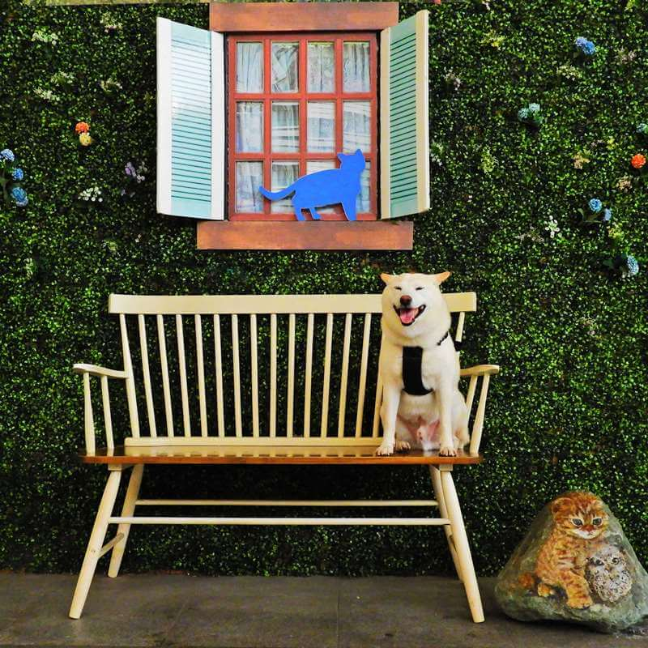
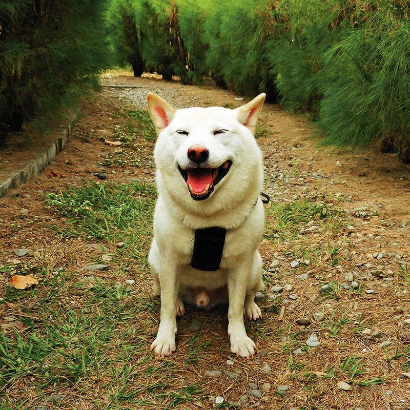

-

平衡木
我最喜歡在高處上面爬，有點可怕，但感覺很好玩～要在上面平衡，小心翼翼地行走中．．．
-

綠意盎然
快來看我擺POSE，這裡是高雄捷運中央公園站的一個椅子，很漂亮吧～
-

高雄熊愛河
這支官方吉祥物日文叫做ヒーロー，英文就是HERO，看我很可愛吧～
-

奶油燈光柴
我的顏色沒有很純白，可是很像奶油的顏色，可以叫我奶油柴，這個燈光很適合我吧～
-

綠籬迷宮跑跑跑
在高雄中央公園透過小樹叢所搭載的一個迷宮，對於我的身型來說非常適合玩耍，可是我的小密技是直接穿越樹叢，不走迷宮唷～🤣🤣🤣